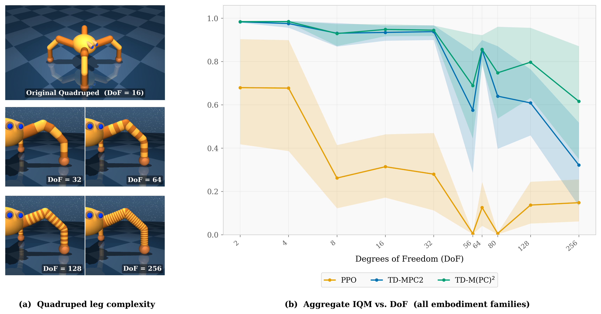
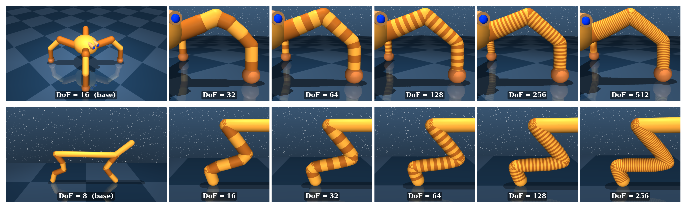
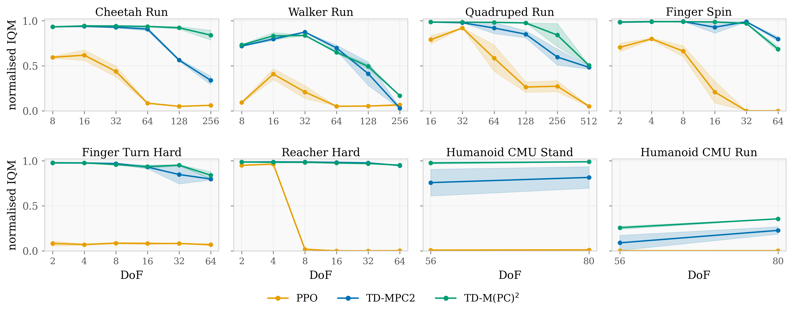
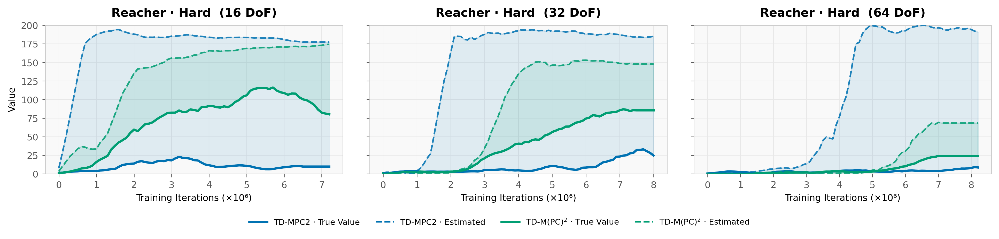

A continuous-control benchmark that isolates action-space scaling.

Reinforcement learning (RL) performs strongly on continuous-control benchmarks, yet many real-world systems such as articulated robots, musculoskeletal models, and dexterous hands require controlling tens to hundreds of actuators. In this regime, action dimensionality can be a dominant bottleneck, but existing benchmarks often entangle dimensionality with changes in objectives, morphology, or contact dynamics, obscuring how algorithms truly scale.
We introduce HiGym, a high-dimensional continuous-control benchmark built on DMControl. HiGym comprises six environment families with multiple tasks and six embodiment complexities. We isolate action-space scaling by keeping tasks and dynamics as similar as possible while increasing degrees of freedom via a principled embodiment-scaling procedure that recursively splits joints to reach target dimensionalities. This yields matched task variants that differ primarily in action dimension.
Across PPO, TD-MPC2, and TD-M(PC)2, we find that model-based methods degrade substantially less as dimensionality increases, preserving higher sample-efficiency and asymptotic performance than model-free baselines. Among model-based methods, TD-M(PC)2's policy-constraint loss provides a consistent further gain at high-DoF locomotion tasks by suppressing value overestimation that arises from a structural mismatch between the learned policy and the planner's behavior policy.
HiGym is built on the DeepMind Control Suite and consists of six environment families spanning diverse morphologies: legged locomotion (Quadruped, Cheetah, Walker), whole-body humanoid control (Humanoid CMU), and planar manipulation (Finger, Reacher). Each family is available at multiple embodiment complexities produced by a principled joint-splitting procedure that recursively subdivides existing joints to reach target dimensionalities while keeping reward, episode length, and overall morphology fixed.
| Environment | Base DoF | Scaled DoFs | Tasks |
|---|---|---|---|
| Quadruped | 16 | 16, 32, 64, 128, 256, 512 | walk, run, escape, fetch |
| Cheetah | 6 | 8, 16, 32, 64, 128, 256 | run |
| Walker | 6 | 8, 16, 32, 64, 128, 256 | stand, walk, run |
| Finger | 2 | 2, 4, 8, 16, 32, 64 | spin, turn_easy, turn_hard |
| Reacher | 2 | 2, 4, 8, 16, 32, 64 | easy, hard |
| Humanoid CMU | 56 | 80 | stand, walk, run |



@article{higym2026,
title = {HiGym: Learning to act in high-dimensional spaces},
author = {Anonymous},
year = {2026},
note = {Under review}
}